• historical origin
A phono-semantic compound: “女” (woman) as the semantic radical and “疾” (jí) as the phonetic component. Originally meant resentment toward another’s talent or virtue.
• alternative forms
Sometimes written interchangeably with “疾” in classical texts; rare variant forms also exist.